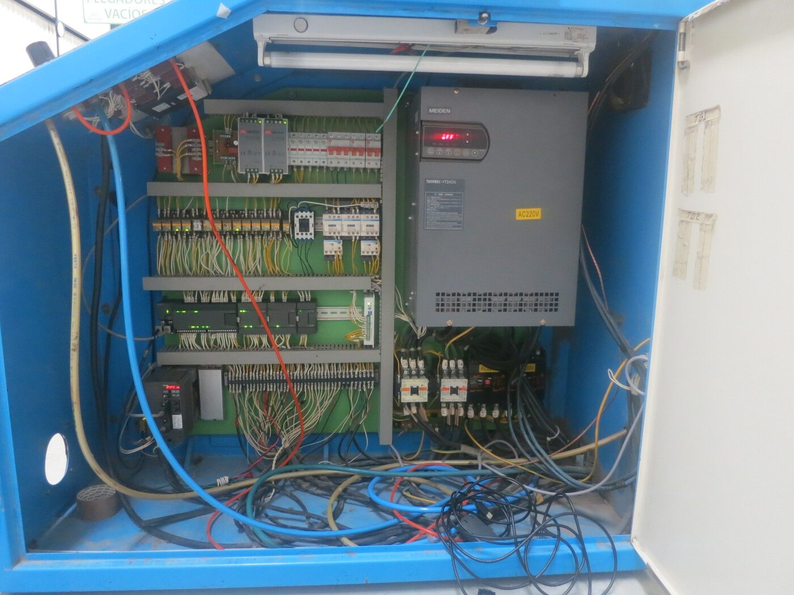
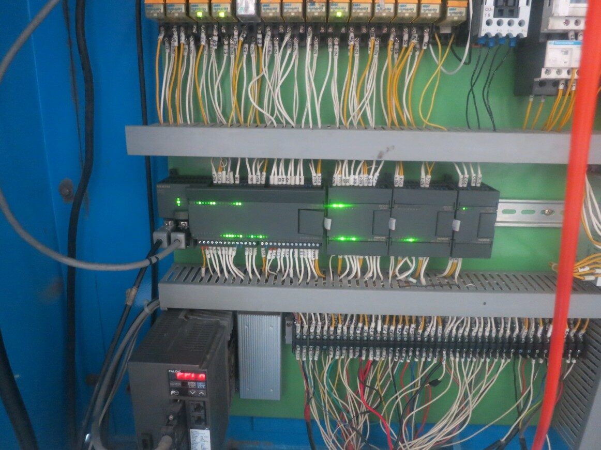

A yarn-warping machine's Siemens S7-200 PLC was password-locked with no recoverable credentials — the plant had no way to maintain or modify it. I reverse-engineered the machine's control logic from its physical behavior and re-implemented it from scratch on a Siemens S7-1200 with a TP700 panel, reusing the existing drives and motors to keep the project on budget.
The new S7-1200 controls the winding drum, thread-tensioning brake, horizontal drum traverse, and fold-plate hydraulics, all connected to the TP700 HMI over Ethernet.

